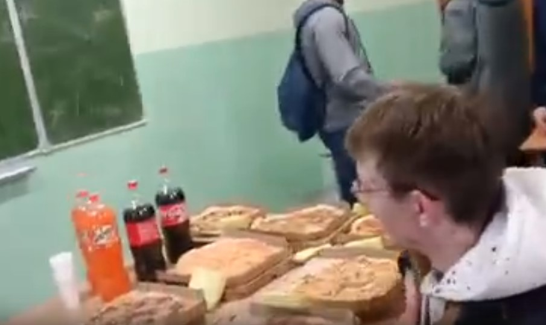
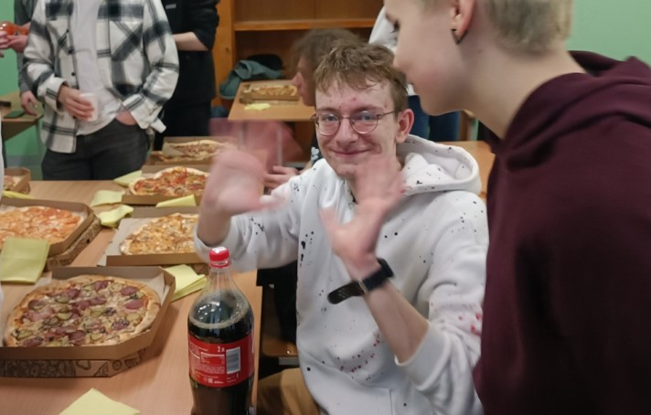

Page №5 🕙 10 mins
23 февраля: Утро
Сегодня был безумно классный день. Баскетбол, приятное поздравление от девочек, счастливое утро и счастливый вечер с танцами на кухне.
Но обо всем по порядку. День начался с приготовления вкусного завтрака, который состоял из гречки и блинчиков с мяском. По итогу получился
очень даже вкусный результат, который я с радостью скушал. Кстати, насчет радости, за окном светило приятное утреннее солнышко, я только что вкусно
покушал, был полностью здоров и полон энергии. Осознав все эти вещи, мне стало приятно на душе и на моем лице непроизвольно выступаила улыбка.
"Нужно обязательно ценить мелкие моменты. Я за них благодарен". Следующие часы я провел за интересными разговорами с хорошими забытими знакомыми: Сашей Шамалем и Юлей Озеровой.
Узнал, как чувствуют себя ребята, которые поступили в другие области и которые находятся далеко от дома. Узнал, что некоторые координально недовольны
выбранным путем, но за исключением вариантов, продолжают делать то, что и делали ранее.
День: Баскетбол
После прятного свободного утра среды, я отправился на учебу. Узнал несколько новых вещей и вспомнил, что такое белорусский язык. Но это не главное, главное то,
что происходило дальше. А дальше шел мой любимый Баскетбол, моя страсть, увлечение и любовь. После часовой разминки на паре физкультуры у нас осталось время на сам баскетбол.
Мы выбрали трех капитанов: Артем с красной майкой, Женя с рыжими волосами и Сашенька Пов-шок. Саша выбирала первой. Выбрала меня:33 Было приятно, но я понимал,
какую фигню мы надрафтим. По итогу в нашу команду попали мы с Сашей (моя одногруппница, умная девочка чуть ниже меня и блин, это Саша, тут отдельно я могу про нее статью написать),
Саша высокий (когда мы с ним случайно встретились на 4 этаже общежития, то он спросил, почему у
меня так много прыщей, а потом осознал, что мог меня оскорбить этим вопросом и извинялся), Арсений (кучеряшка, может допрыгнуть до кольца, выглядит как самовлебленный поитовец) и
пятым игроком был Паша Ободов (поделился своим конспектом по алгебре тем самым помог мне сдать этот экзамен. Иногда он такой приятный человек, а иногда говорит такие вещи, что
не хочется его больше видеть. Такой человек)).). Таким же образом сформировались и остальные команды Жени и Артема. После чего, Физрук сказал подойти к штрофной линии по одному представителю
команды бросать штрафные. Кто попадает последним, того команда садиться на скамью и ждет, пока выявится победитель первых двух команд.
На линию штрафной линии отправили меня. Дело в том, что я уже два раза бросал штрафные на протяжении той пары. Первый бросок зашел чисто, а вот второй даже не долетел до кольца. Так что, когда я кидал на развод, могло
произойти все, что угодно. Я сосредоточился, ударил два раза об пол, чтобы почувствовать мяч и недолго думая, совершил штрафной бросок. Почему то про себя я подумал, что промазал. Мяч угодил в переднюю дужку, потом в заднюю, а
от туда в правую и наконец в середину кольца. Я сильно обрадовался, что мне получилось удачно совершить бросок и наша команда не будет просиживать штаны на скамье запасных. Вторым попал Женя и мы приговились играть против друг друга.
Игровые события
В первой же атаке команда оппонента забросила свой первый легкий мяч. После увиденного, лично у меня на уме были лишь мысли по типу "Мы проиграли...", "Я так и думал, что команда у нас не очень...". Но чтобы я не думал, игра
продолжалась. На протяжении 10 минут все 10 игроков бегали от кольца к кольцу, пытаясь реализовать хоть какие то броски. Оппоненты Жени, пытаясь играть через своего двухметрового гиганта-капитана, постоянно нарывались на жесткие блоки,
местами очень жесткими, которые совершенно не входили в правила. Одним словом, мы не щедили никого, как в принципе и нас. Лично наша команда упиралась в сильную нехватку боевой силы. Я пытался нащупать пульс игры, но как только попадал
на вражескую половину, то несколько человек сразу нападали на меня и обворовывали до нитки. И по сути некому было взять инициативу. До тех пор, пока следующая атака не сменила этот безрезультативный темп игры.
Вражеская команда решительно направилась к нашему кольцу и вновь попыталась сыграть через своих больших игроков. Не знаю сколько подборов и блоков произошло у команды оппонента и нашей соответственно, но уж точно много. И после того, как Женя
попытался прыгнуть с мячом, Саша сильно ударила его по руке, после чего прозвучал свисток от физрука. И на мое большое удивление он сказал: "Девочка, выводи мяч из-за лицевой". Что означало лишь то, что после такого жесткого фола, у нас все равно
остался мяч. Саша отдала пасс на меня, а я ей обратно, как никак она сама создала себе момент. Она быстро побежала к кольцу, а за ней не менее медленно бежал Женя, который жаждал справедливости, мести и крови. Благо бить девочку он не стал, но
сильно отрабатывал в защите против нее. Саша дошла до вражеской трехочковой линии, когда краем глаза увидела меня открывающегося на трехочковой линии, рядом с ней. Она быстро передала мне мяч и, увидев недалеко от меня моего персонального защитника,
который уже спешил накрыть мой бросок, я без задней мысли совершил высокий прыжок и по уже знакомой мне форме выпустил снаряд в сторону вражеского кольца. Как и большинство моих красивых бросков, мяч двигался по высокоой дуге и угодил прямо в центр корзины.
В следующее мгновение Саша, которая совсем была близко ко мне, сильно закричала от радости, а та самая скамейка третьей команды взорвалась от восторга и криков. Для меня это не был обычный бросок, он значит для меня очень многое - рост в моей любимой игре и она является одной
из немногоих трех, которые я забросил в игре.
Таким образом, счет был 2:2 и следующий мяч выигрывал эту напряженную и прекрасную игру. В следующие последние минуты наша команда билась еще отверженее, но на последних издыханиях. В последней атаке оппонентов, у меня не был сил защищаться и я остался на середине
игрового поля. Каким то чудом моя команда вновь смогла отзащищаться и, увидев что я открыт, мне отдали передачу через половиу поля и я бросился вперед, к кольцу. На моем пути оказалось два защитника, которые пытались накрыть меня на расстоянии среднего броска с разных сторон.
На большой скорости, я врезался корпусом в ближнего из них ко мне, развернулся лицом к кольцу и выполнил красивый fade-away в опять же высоком прыжке. Защитник пытался заблокировать меня, но не сумел дотянуться до мяча, который удачно угодил в цель. Я был переполнен сильными эмоциями и
вне себя от счастья, что наша команда ни на секунду не подумала сдаться перед более сильными соперниками, играла до конца и вкладывалсь в каждый игровой момент. В этом плане, наша команда оказлась сильнее. И я лично рад, что несколько неудачных попыток, не сломили мой настрой и напор, и
я смог реализовать два сложных, но эффектных и красивых броска.
Следующая наша игра с командой Артема была также наполнена некоторыми красивыми моментами, но она закончилась преждевременно физруком, поэтому нас всех отправили по раздевалкам.
Было очень захватывающе играть в те игры и мне очень понравилось играть в командный баскетбол. Но а мы двигаемся дальше.
Неожиданное поздравление
Возвращаясь на пары уставший и мокрый, я увидел нашего преподавателя Михаила Сергеевича, идущего в противоположное направление к нашей обычной аудитории. "Странно", - подумал я и закончил: - "ну, ладно".
Пошел с ними к новому кабинету, который оказался занятым, поэтому я и другие ребята, ничего не понимая, отправились обратно в наш стандартный класс.
Когда мы дошли до аудитории, свет был выключен, а дверь заперта. После того, как Миша открыл дверь и мы зашли, свет сразу же включился и раздались радостные выкрики девочек, которые поздравляли нас с праздником.
На столе мы увидели удобно разместившиеся многочисленные коробки различных пицц, которые мы встретили с должным уютом и заботой. Полакомившись вкусным ужином, мы принялись играть в веселные игры, такие как
уно и игра в ассоциации. И все это вместо пары по математике.
Время шло и оно перевалило за 7:40 вечера. А так как меня еще ждали деловые дела в общежитии, то попрощавшись с ребятами, я вновь отправился впуть.
В общаге меня ждало мероприятие, которое в последствии поможет закрыть отработки за последний месяц - май. Поэтому сейчас я совершенно свободный человек.


Итоги...
Сегодня был насыщенный и яркий день, наполенный неожиданными поворотами и желанными достижениями. Сегодняшняя каждодневная рутина тесно перекликалась с неординарными событиями, которые могли бы уместиться в несколько десятков строчек кода моего блога. Или они уже здесь удобно храняться и терпеливо дожидаются, когда их прочтут...